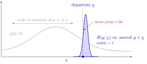
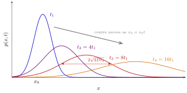
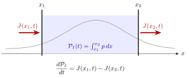
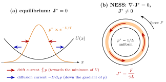
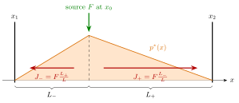
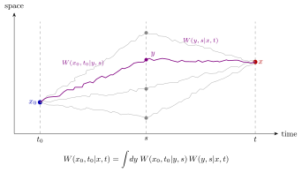
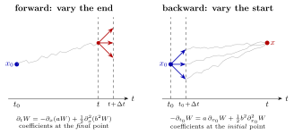
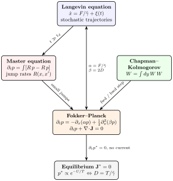

2 The Fokker–Planck equation
Chapter 1 ended with the master equation, a balance law for the probability density \(p(\mathbf x,t)\) driven by transition rates \(R(\mathbf x,\mathbf x')\). It is exact but an integro-differential equation, and its rates are rarely known in detail. This chapter shows that when jumps are small — the generic situation for a Brownian particle observed on coarse-grained times — the master equation reduces to a second-order partial differential equation, the Fokker–Planck equation, which depends on the rates only through two numbers at each point: a drift velocity and a diffusion coefficient. We solve it in the simplest case (Gaussian spreading), recast it as a continuity equation for probability with an explicit probability current, and use the current to make precise the difference between a stationary state and an equilibrium state. Requiring equilibrium in a conservative force field gives back the Boltzmann distribution and, once more, the Einstein relation. Finally we derive the same equation from a different starting point, the Chapman–Kolmogorov equation for the transition probability, which comes in a forward and a backward version.
2.1 From the master equation to the Fokker–Planck equation
2.1.1 Jump variables
Start from the master equation of Chapter 1, in one dimension for clarity (the \(d\)-dimensional case is identical with vector indices): \[\frac{\partial p(x,t)}{\partial t} = \int dx' \Big[R(x,x')\,p(x',t) - R(x',x)\,p(x,t)\Big],\] where \(R(x,x')\) is the rate of transitions from \(x'\) to \(x\). It is convenient to describe a transition by its departure point and its jump \(\chi\) (arrival minus departure), and to write \[R(y;\chi) \equiv R(y+\chi,\,y) = \text{rate of a jump of size }\chi\text{ starting from }y .\]
- In the gain term the particle departs from \(x' = x-\chi\) and arrives at \(x\): \(R(x,x') = R(x-\chi;\chi)\), \(dx' = d\chi\) (up to an irrelevant sign absorbed by flipping the integration limits).
- In the loss term the particle departs from \(x\) and arrives at \(x' = x+\chi\): \(R(x',x) = R(x;\chi)\).
Hence \[\frac{\partial p(x,t)}{\partial t} = \int d\chi\,\Big[R(x-\chi;\chi)\,p(x-\chi,t) - R(x;\chi)\,p(x,t)\Big].\] Both terms involve the same function of the departure point, \(f_\chi(y)\equiv R(y;\chi)\,p(y,t)\), evaluated at \(y = x-\chi\) and at \(y = x\).
2.1.2 The small-jump expansion
Brownian particles do not make large jumps: \(R(y;\chi)\) is appreciably different from zero only for \(|\chi|\) smaller than some microscopic length \(\ell\). On the other hand, \(p\) and the dependence of the rates on the departure point vary on a macroscopic scale \(L\gg\ell\). We can therefore Taylor-expand \(f_\chi(x-\chi)\) around \(f_\chi(x)\) — in its first argument only: \[R(x-\chi;\chi)\,p(x-\chi,t) = R(x;\chi)\,p(x,t) - \chi\,\frac{\partial}{\partial x}\Big[R(x;\chi)\,p(x,t)\Big] + \frac{\chi^2}{2}\,\frac{\partial^2}{\partial x^2}\Big[R(x;\chi)\,p(x,t)\Big] - \dots\] The zeroth-order term cancels exactly against the loss term. Exchanging the \(\chi\)-integral with the \(x\)-derivatives, \[\frac{\partial p}{\partial t} = -\frac{\partial}{\partial x}\Big[\alpha(x)\,p(x,t)\Big] + \frac12\frac{\partial^2}{\partial x^2}\Big[\beta(x)\,p(x,t)\Big] + \dots\] with the first two jump moments \[\alpha(x) = \int d\chi\;\chi\,R(x;\chi), \qquad \beta(x) = \int d\chi\;\chi^2\,R(x;\chi).\]

Figure: the assumption behind the Fokker–Planck equation. From any departure point \(y\) the jump kernel \(R(y;\chi)\) is sharply peaked (width \(\ell\)), while the probability density and the \(y\)-dependence of the kernel vary on a much larger scale \(L\). The kernel may be asymmetric (its mean is the drift); only its first two moments survive in the equation.
Keeping all orders, the master equation is equivalent to \[\frac{\partial p(x,t)}{\partial t} = \sum_{n=1}^\infty\frac{(-1)^n}{n!}\frac{\partial^n}{\partial x^n}\Big[M_n(x)\,p(x,t)\Big], \qquad M_n(x) = \int d\chi\,\chi^n R(x;\chi).\]
Why may we stop at \(n=2\)? If jumps of size \(\sim\ell\) occur at a rate \(\sim1/\tau_{\mathrm{j}}\), then \(M_n\sim\ell^n/\tau_{\mathrm{j}}\) and each derivative acting on \(p\) brings a factor \(1/L\), so the \(n\)-th term is of relative order \((\ell/L)^n\). More sharply, in the diffusive scaling limit \(\ell\to0\), \(\tau_{\mathrm{j}}\to0\) with \(\ell^2/\tau_{\mathrm{j}}\) fixed (exactly how the random walk becomes Brownian motion), \(M_1\) and \(M_2\) remain finite while \(M_{n\geq3}\sim \ell^{n-2}\cdot\ell^2/\tau_{\mathrm{j}}\to0\).
Remark (Truncate at two, or not at all). Pawula’s theorem states that a truncation of the Kramers–Moyal series at any finite order \(n>2\) is inconsistent with the positivity of \(p\). The expansion must stop at second order (Fokker–Planck) or be kept in full (the master equation). Note also that we never needed \(R(y;\chi)\) to be a smooth function of the jump \(\chi\): it can be arbitrarily sharp. Smoothness is required only in the departure point \(y\).
In \(d\) dimensions, with \(\mathbf x = (x_1,\dots,x_d)\), \[\boxed{\frac{\partial p(\mathbf x,t)}{\partial t} = -\sum_i\frac{\partial}{\partial x_i}\Big[\alpha_i(\mathbf x)\,p(\mathbf x,t)\Big] + \frac12\sum_{i,j}\frac{\partial^2}{\partial x_i\partial x_j}\Big[\beta_{ij}(\mathbf x)\,p(\mathbf x,t)\Big]}\] with drift vector and diffusion matrix \[\alpha_i(\mathbf x) = \int d^d\chi\;\chi_i\,R(\mathbf x;\boldsymbol\chi), \qquad \beta_{ij}(\mathbf x) = \int d^d\chi\;\chi_i\chi_j\,R(\mathbf x;\boldsymbol\chi).\] \(\beta_{ij}\) is symmetric and positive semi-definite.
Although we had the Brownian particle in mind, nothing in the derivation refers to it: \(\mathbf x\) can be any set of variables describing the state of a system (a velocity, a chemical concentration, a price, a population). That is why the Fokker–Planck equation is ubiquitous.
2.2 Drift velocity and diffusion coefficient
The jump moments have a transparent meaning. In a short time \(\Delta t\), a particle at \(\mathbf x\) jumps by \(\boldsymbol\chi\) with probability \(R(\mathbf x;\boldsymbol\chi)\,d^d\chi\,\Delta t\) (and does not move with the remaining probability). Therefore its displacement \(\Delta\mathbf x\) satisfies \[\langle\Delta x_i\rangle_{\mathbf x} = \alpha_i(\mathbf x)\,\Delta t, \qquad \langle\Delta x_i\,\Delta x_j\rangle_{\mathbf x} = \beta_{ij}(\mathbf x)\,\Delta t,\] where \(\langle\cdot\rangle_{\mathbf x}\) is the average over jumps starting from \(\mathbf x\).
- \(\boldsymbol\alpha = \langle\Delta\mathbf x\rangle/\Delta t\) is the drift velocity: the mean velocity of the particle. Without external forces it vanishes by symmetry. With a constant external force \(\mathbf F_0\) (gravity) it is the sedimentation velocity \(\mathbf v_0 = \mathbf F_0/\tilde\gamma\), set by the balance of the force with Stokes friction. In general \(\boldsymbol\alpha = \mathbf F(\mathbf x)/\tilde\gamma\).
- \(\beta_{ij} = \langle\Delta x_i\Delta x_j\rangle/\Delta t\) is the rate of growth of the mean square displacement. In a homogeneous, isotropic medium it is diagonal and constant: \[\beta_{ij} = 2D\,\delta_{ij},\] consistently with \(\langle\Delta x_i^2\rangle = 2D\,\Delta t\) for each component.
Note the different scaling of the two moments with \(\Delta t\): the mean displacement is \(\propto\Delta t\) while the typical displacement is \(\propto\sqrt{\Delta t}\). Over short times fluctuations dominate the drift; over long times the drift wins.
With \(\boldsymbol\alpha = \mathbf v_0\) and \(\beta_{ij}=2D\delta_{ij}\) constant, \[\frac{\partial p(\mathbf x,t)}{\partial t} = -\mathbf v_0\cdot\nabla p(\mathbf x,t) + D\,\nabla^2 p(\mathbf x,t).\] Without external forces it reduces to the diffusion equation \(\partial_t p = D\nabla^2 p\).
Remark (Link with the overdamped Langevin equation). The overdamped Langevin equation of Chapter 1, \(\dot{\mathbf x} = \mathbf F/\tilde\gamma + \boldsymbol\xi(t)\) with \(\langle\xi_i(t)\xi_j(t')\rangle = 2D\delta_{ij}\delta(t-t')\), gives in a short time \(\langle\Delta\mathbf x\rangle = (\mathbf F/\tilde\gamma)\Delta t\) and \(\langle\Delta x_i\Delta x_j\rangle = 2D\delta_{ij}\Delta t + \mathcal O(\Delta t^2)\). Its trajectories are therefore distributed according to the Fokker–Planck equation with \(\boldsymbol\alpha = \mathbf F/\tilde\gamma\) and \(\beta_{ij}=2D\delta_{ij}\). Langevin (trajectories) and Fokker–Planck (probabilities) are two faces of the same stochastic process.
A particle on a lattice of spacing \(a\) jumps right with rate \(r_+\) and left with rate \(r_-\): \(R(x;\chi) = r_+\delta(\chi-a) + r_-\delta(\chi+a)\). Then \[\alpha = (r_+-r_-)\,a, \qquad \beta = (r_++r_-)\,a^2 \;\Rightarrow\; D = \tfrac12(r_++r_-)a^2 .\] The asymmetry of the jumps produces the drift, their total rate produces the diffusion. For \(r_+=r_-=r\) we recover \(D = ra^2\) of the example in Chapter 1.
2.2.1 Moments of the distribution
Without solving the Fokker–Planck equation one can derive closed equations for the moments, by multiplying by \(x\) or \(x^2\) and integrating by parts (boundary terms vanish because \(p\to0\) fast at infinity). In one dimension: \[\frac{d\langle x\rangle}{dt} = \langle\alpha(x)\rangle, \qquad \frac{d\langle x^2\rangle}{dt} = 2\langle x\,\alpha(x)\rangle + \langle\beta(x)\rangle .\] For constant \(\alpha = v_0\) and \(\beta=2D\): \(\langle x\rangle = x_0 + v_0t\) and \(\frac{d}{dt}\big(\langle x^2\rangle - \langle x\rangle^2\big) = 2D\), i.e. \[\langle x^2\rangle - \langle x\rangle^2 = 2Dt .\] The centre of the distribution moves ballistically with the drift; its width grows diffusively.
2.3 Gaussian solution of the diffusion equation
Solve \[\frac{\partial p}{\partial t} = -v_0\frac{\partial p}{\partial x} + D\frac{\partial^2 p}{\partial x^2}, \qquad p(x,0) = \delta(x-x_0)\] on the whole line. The equation is linear with constant coefficients, so it is diagonalised by the Fourier transform \(\hat p(k,t) = \int dx\,e^{-ikx}p(x,t)\), under which \(\partial_x\to ik\): \[\frac{\partial\hat p}{\partial t} = \big(-ikv_0 - Dk^2\big)\hat p, \qquad \hat p(k,0) = e^{-ikx_0} \quad\Longrightarrow\quad \hat p(k,t) = e^{-ik(x_0+v_0t)}\,e^{-Dk^2t}.\] Each Fourier mode is translated by the drift and damped at a rate \(Dk^2\): short wavelengths (sharp features) are erased fastest. Transforming back, a Gaussian integral (complete the square in \(k\)) gives:
\[p(x,t) = \frac{1}{\sqrt{4\pi Dt}}\exp\!\left[-\frac{(x - x_0 - v_0t)^2}{4Dt}\right],\] a Gaussian with mean \(x_0+v_0t\) and variance \(2Dt\). In \(d\) dimensions the solution factorises over components: \[p(\mathbf x,t) = (4\pi Dt)^{-d/2}\exp\!\left[-\frac{|\mathbf x-\mathbf x_0-\mathbf v_0t|^2}{4Dt}\right], \qquad \langle|\mathbf x-\langle\mathbf x\rangle|^2\rangle = 2dDt .\]
The variance \(2Dt\) coincides with the long-time mean square displacement of the Langevin equation: the Fokker–Planck description reproduces the diffusive regime (but not the ballistic one, which lives below the coarse-graining time \(t_d\)).

Figure: Gaussian solution of the drift-diffusion equation starting from a point at \(x_0\). The centre is transported at the drift velocity (\(\propto t\)) while the width grows only as \(\sqrt t\); the area stays equal to one. Peak height decays as \(t^{-1/2}\).
Remark (Self-similarity and the Green’s function). Without drift, \(p(x,t) = (Dt)^{-1/2}\,\phi\big((x-x_0)/\sqrt{Dt}\big)\) with \(\phi(u) = e^{-u^2/4}/\sqrt{4\pi}\): the profile at all times is the same curve, rescaled. The natural variable is \(x/\sqrt t\) — the hallmark of diffusion. Moreover, by linearity the solution for an arbitrary initial condition is the convolution \(p(x,t) = \int dx_0\,G(x-x_0,t)\,p(x_0,0)\) with the Gaussian \(G\) above, the Green’s function (or propagator) of the diffusion equation.
2.4 The Fokker–Planck equation as a continuity equation
In its general form, with drift and diffusion that may depend on position and time, the Fokker–Planck equation reads
\[ \frac{\partial p(\mathbf x,t)}{\partial t} = -\nabla\cdot\Big[\boldsymbol\alpha(\mathbf x,t)\,p(\mathbf x,t)\Big] + \frac{1}{2}\sum_{i,j}\frac{\partial^2}{\partial x_i\,\partial x_j}\Big[\beta_{ij}(\mathbf x,t)\,p(\mathbf x,t)\Big]. \] The right-hand side is a total divergence. Defining the probability current \[J_i(\mathbf x,t) = \alpha_i(\mathbf x)\,p(\mathbf x,t) - \frac12\sum_j\frac{\partial}{\partial x_j}\Big[\beta_{ij}(\mathbf x)\,p(\mathbf x,t)\Big],\] it takes the form of a local conservation law: \[\boxed{\frac{\partial p(\mathbf x,t)}{\partial t} + \nabla\cdot\mathbf J(\mathbf x,t) = 0 .}\] Probability, like mass or charge, cannot appear or disappear; it can only flow. For a Brownian particle in a force field (\(\boldsymbol\alpha = \mathbf F/\tilde\gamma\), \(\beta_{ij} = 2D\delta_{ij}\)), \[\mathbf J = \underbrace{\frac{\mathbf F}{\tilde\gamma}\,p}_{\text{drift current}} \;\underbrace{-\,D\,\nabla p}_{\text{diffusion current (Fick)}},\] which is exactly the decomposition used by Einstein for sedimentation (Chapter 1).
Remark (Position-dependent diffusion). If \(\beta_{ij}\) depends on \(\mathbf x\), the current can be rewritten as \(J_i = \big(\alpha_i - \tfrac12\sum_j\partial_j\beta_{ij}\big)p - \tfrac12\sum_j\beta_{ij}\partial_j p\): a gradient of the diffusion coefficient acts as an extra (sometimes called “spurious”) drift. Particles tend to accumulate where they diffuse less.
2.4.1 Integral form and boundary conditions
Integrating over a volume \(V\) and using Gauss’ theorem, \[\frac{d}{dt}\int_V d^dx\;p(\mathbf x,t) = -\oint_{\partial V}\mathbf J\cdot d\mathbf S :\] the probability inside \(V\) changes only through the flux across its boundary. In one dimension, for the interval \(I = [x_1,x_2]\), \[\frac{d}{dt}\,\mathcal P_I(t) = J(x_1,t) - J(x_2,t), \qquad \mathcal P_I(t) = \int_{x_1}^{x_2}dx\,p(x,t),\] with \(J>0\) meaning a flow towards increasing \(x\). This makes it straightforward to formulate boundary conditions on a finite domain.

Figure: probability balance in an interval. What enters through \(x_1\) minus what leaves through \(x_2\) is what accumulates inside.
- Reflecting barriers: no flux crosses the boundaries, \(J(x_1,t) = J(x_2,t) = 0\). The probability in \(I\) is conserved.
- Absorbing barriers: a walker that reaches the boundary is removed and never comes back, \(p(x_1,t) = p(x_2,t) = 0\). \(\mathcal P_I(t)\) decreases in time (it is the survival probability).
- Periodic boundary conditions: \(p(x_1,t) = p(x_2,t)\) and \(J(x_1,t) = J(x_2,t)\). The interval is a ring; probability is conserved because what leaves on one side re-enters on the other.
2.5 Stationary states versus equilibrium
A stationary solution \(p^*(\mathbf x)\) of the Fokker–Planck equation is time-independent, \(\partial_tp^* = 0\), which by the continuity equation means \[\nabla\cdot\mathbf J^*(\mathbf x) = 0 .\] A stationary state is an equilibrium state if, in addition, the current vanishes everywhere: \[\mathbf J^*(\mathbf x) = 0 \quad\forall\,\mathbf x .\] A stationary state with \(\mathbf J^*\neq0\) is a nonequilibrium steady state (NESS).
Physically, a system in thermodynamic equilibrium cannot sustain any macroscopic current — of matter, charge, heat, or probability. A stationary state only requires that currents be divergence-free: whatever flows into a region flows out of it, so densities do not change, but there can be steady flows. A river in steady state has a time-independent water level and a non-zero current; a lake in equilibrium has neither.
The same distinction exists for discrete states, where it takes a form that will be central to the next part of the course. For the master equation \(\dot p_i = \sum_{k\neq i}(R_{ik}p_k - R_{ki}p_i)\),
- stationarity (global balance) requires \(\sum_{k\neq i}\big(R_{ik}p^*_k - R_{ki}p^*_i\big)=0\) for every \(i\): the total in-flow into each state equals its total out-flow;
- equilibrium (detailed balance) requires \(R_{ik}p^*_k = R_{ki}p^*_i\) for every pair \((i,k)\): the net current between each pair of states vanishes.
\(\mathbf J^*=0\) is the continuum version of detailed balance.
In \(d=1\), \(\partial_xJ^*=0\) implies \(J^*(x) =\) const. If the current vanishes somewhere — at infinity with natural boundary conditions, or at a reflecting wall — it vanishes everywhere. A NESS in one dimension needs periodic boundary conditions, sources and sinks, or boundaries held at different densities. In \(d\geq2\) a divergence-free current can circulate (e.g. \(\mathbf J^* = \nabla\times\mathbf A\)) even in an infinite system.
Consider an overdamped particle on a ring of circumference \(L\), pushed by a constant tangential force \(F\) (think of a colloid dragged around a circular optical trap). Then \(\alpha = F/\tilde\gamma\), \(\beta = 2D\), with periodic boundary conditions. The uniform density \[p^*(x) = \frac1L\] is stationary (all derivatives vanish), and the current is \[J^* = \frac{F}{\tilde\gamma}\,\frac1L \neq 0 .\] The distribution looks like an equilibrium one, yet probability flows steadily around the ring. The force is not conservative on the ring: the would-be potential \(U = -Fx\) is not single-valued (it changes by \(-FL\) after one turn), so no Boltzmann distribution exists. The system is a NESS, sustained by the work that \(F\) continuously does and dissipates into the bath as heat.

Figure: (a) In a confining potential the drift current (towards the minimum) and the diffusion current (away from the peak of \(p^*\)) cancel at every point: equilibrium, \(\mathbf J^*=0\). (b) On a ring with a non-conservative force the density is uniform and time-independent, but a constant current circulates: a nonequilibrium steady state.
Free diffusion (\(\alpha=0\), \(\beta=2D\)) on \(I=[x_1,x_2]\) with absorbing ends. Without sources the only stationary solution is \(p^*=0\): sooner or later every walker is absorbed. Now inject walkers at a constant rate \(F\) at \(x_0\in I\): \[\partial_tp + \partial_xJ = F\,\delta(x-x_0).\] In the stationary state, away from \(x_0\), \(\partial_x^2p^*=0\), so \(p^*\) is piecewise linear. Absorption gives \(p^*(x_1)=p^*(x_2)=0\), continuity at \(x_0\) gives a tent, and integrating the equation across \(x_0\) gives the jump in the derivative, \(-D\big[p^{*\prime}(x_0^+) - p^{*\prime}(x_0^-)\big] = F\). With \(L_- = x_0-x_1\), \(L_+ = x_2-x_0\) and \(L = L_-+L_+\): \[p^*(x) = \begin{cases}\dfrac{F L_+}{DL}(x-x_1), & x<x_0,\\[6pt] \dfrac{FL_-}{DL}(x_2-x), & x>x_0,\end{cases} \qquad J^*(x) = \begin{cases}-F\,L_+/L, & x<x_0,\\ +F\,L_-/L, & x>x_0.\end{cases}\] The state is stationary but carries currents towards both sinks: it is a NESS maintained by the source. Two by-products:
- the probability that a walker injected at \(x_0\) is absorbed at \(x_1\) is \(|J^*_-|/F = L_+/L = (x_2-x_0)/(x_2-x_1)\) — the closer barrier is more likely;
- the mean time spent in \(I\) is (number of walkers in \(I\))/(out-flux) \(= \frac1F\int_I p^*\,dx = \frac{(x_0-x_1)(x_2-x_0)}{2D}\).

Figure: diffusion between two absorbing walls with continuous injection at \(x_0\). The stationary density is a tent; the slope on each side is proportional to the current flowing to that wall. More walkers leave through the nearer wall (\(J_- > J_+\) when \(L_- < L_+\)).
2.6 Equilibrium in a conservative force field
Let the particle feel a conservative force \(\mathbf F(\mathbf x) = -\nabla U(\mathbf x)\), with \(U\to\infty\) as \(|\mathbf x|\to\infty\) (confining). The Fokker–Planck equation is \[\frac{\partial p}{\partial t} = -\nabla\cdot\mathbf J, \qquad \mathbf J = \frac{\mathbf F}{\tilde\gamma}\,p - D\,\nabla p .\] At equilibrium the current must vanish, \(\mathbf J^* = 0\): \[-\frac{\nabla U}{\tilde\gamma}\,p^* = D\,\nabla p^* \quad\Longleftrightarrow\quad \nabla\ln p^*(\mathbf x) = -\frac{\nabla U(\mathbf x)}{\tilde\gamma D},\] which integrates to \[p^*(\mathbf x) = \frac{1}{Z}\exp\!\left(-\frac{U(\mathbf x)}{\tilde\gamma D}\right), \qquad Z = \int d^dx\,e^{-U/(\tilde\gamma D)} .\] Thermodynamics, on the other hand, demands that a system in contact with a bath at temperature \(T\) be distributed according to Boltzmann, \(p_{\mathrm{eq}}\propto e^{-U/T}\). The two coincide if and only if
\[\tilde\gamma\,D = T \qquad\Longleftrightarrow\qquad D = \frac{T}{\tilde\gamma}.\] Requiring that the zero-current stationary state of the Fokker–Planck equation be the thermodynamic equilibrium state fixes the ratio of diffusion and mobility \(1/\tilde\gamma\).
This is the third route to the same relation: Einstein’s balance of osmotic pressure (Chapter 1), equipartition in the Langevin equation (Chapter 1), and now the Boltzmann distribution in the Fokker–Planck equation. Each time, it expresses the same physical fact: friction and fluctuations originate from the same bath and must be balanced so that the bath’s temperature is respected.
- Gravity, \(U = mgz\): \(p^*(z)\propto e^{-mgz/T}\), the barometric profile of Perrin’s colloids.
- Harmonic trap, \(U = \tfrac12\kappa x^2\): \(p^*(x)\propto e^{-\kappa x^2/2T}\), a Gaussian of variance \(T/\kappa\), consistent with equipartition \(\tfrac12\kappa\langle x^2\rangle = \tfrac12T\). (The time-dependent problem is the Ornstein–Uhlenbeck process, whose Fokker–Planck equation \(\partial_tp = k\,\partial_x(xp) + D\,\partial_x^2p\) with \(k = \kappa/\tilde\gamma\) has a Gaussian solution of mean \(x_0e^{-kt}\) and variance \(\tfrac Dk(1-e^{-2kt})\).)
Remark (When can the current vanish?). The condition \(\nabla\ln p^* = \mathbf F/(\tilde\gamma D)\) requires \(\mathbf F\) to be a gradient: taking the curl of both sides, \(\nabla\times\mathbf F = 0\). For a non-conservative force (a rotational field in \(d\geq2\), or a constant force on a ring) no zero-current solution exists, and any stationary state is necessarily a NESS. Nonequilibrium is therefore not only a matter of transients: some systems are driven permanently out of equilibrium by forces that cannot be derived from a potential, or by boundaries that impose currents.
2.7 The Chapman–Kolmogorov equation
We now derive the Fokker–Planck equation a second time, starting from the transition probability of a Markov process rather than from rates. This route is more general (it does not assume any specific jump mechanism) and produces naturally two equations, one for each end of the time interval.
\(W(x_0,t_0\,|\,x,t)\) is the probability density to find the process at \(x\) at time \(t\), given that it was at \(x_0\) at time \(t_0\leq t\). (Time flows from left to right.) It satisfies \[W(x_0,t_0\,|\,x,t)\geq0, \qquad \int dx\,W(x_0,t_0\,|\,x,t) = 1, \qquad W(x_0,t_0\,|\,x,t_0) = \delta(x-x_0).\] The process is Markovian if, knowing the state at time \(s\), the future after \(s\) is independent of the past before \(s\).
For a Markov process the following composition law holds for every intermediate time \(s\in[t_0,t]\):
\[W(x_0,t_0\,|\,x,t) = \int dy\;W(x_0,t_0\,|\,y,s)\;W(y,s\,|\,x,t), \qquad t_0\leq s\leq t .\]
To go from \((x_0,t_0)\) to \((x,t)\) the process must be somewhere, say at \(y\), at the intermediate time \(s\). By the Markov property, the probability of the second leg depends on \(y\) only, not on how \(y\) was reached, so the two legs multiply; summing over all intermediate positions gives the total. This is the continuous analogue of the matrix-product rule \(W^{t+t'} = W^{t'}W^{t}\) for Markov chains.

Figure: the Chapman–Kolmogorov equation. Every path from \((x_0,t_0)\) to \((x,t)\) crosses the time slice \(s\) at some position \(y\); for a Markov process the two legs are independent given \(y\), and the total transition probability is the sum over all crossing points.
From the transition probability we get the evolution of any initial distribution: if \(p(y,t')\) is the density at time \(t'\), \[p(x,t) = \int dy\;p(y,t')\,W(y,t'\,|\,x,t), \qquad t\geq t'.\]
2.8 Forward and backward Kolmogorov equations
The Chapman–Kolmogorov equation is nonlinear in \(W\) and does not, by itself, tell us how to compute \(W\). We now exploit it for an infinitesimal time step, assuming (as for the master equation) that the process moves only by small amounts in short times. We define the local drift and diffusion of the process through the conditional moments of a short-time displacement: \[a(y,t) = \lim_{\Delta t\to0}\frac1{\Delta t}\int dx\,(x-y)\,W(y,t\,|\,x,t+\Delta t), \qquad b^2(y,t) = \lim_{\Delta t\to0}\frac1{\Delta t}\int dx\,(x-y)^2\,W(y,t\,|\,x,t+\Delta t),\] and assume that all higher conditional moments are \(o(\Delta t)\) (the paths are continuous).
2.8.1 Forward equation: vary the final point
Put the short step at the end of the interval: \(s = t\), final time \(t+\Delta t\). To handle the distributional character of \(W\), multiply by a smooth test function \(f(x)\) that decays fast at infinity, and integrate: \[\int dx\,f(x)\,\frac{\partial W(x_0,t_0|x,t)}{\partial t} = \lim_{\Delta t\to0}\frac1{\Delta t}\int dx\,f(x)\Big[W(x_0,t_0|x,t+\Delta t) - W(x_0,t_0|x,t)\Big].\] By Chapman–Kolmogorov, \(W(x_0,t_0|x,t+\Delta t) = \int dy\,W(x_0,t_0|y,t)\,W(y,t|x,t+\Delta t)\). For \(\Delta t\to0\) the short-time factor vanishes unless \(x\) is close to \(y\), so expand \(f(x) = f(y) + f'(y)(x-y) + \tfrac12f''(y)(x-y)^2 + \dots\) and integrate over \(x\). Thanks to the normalisation \(\int dx\,W(y,t|x,t+\Delta t) = 1\), the term \(f(y)\) reproduces exactly the subtracted term \(\int dy\,f(y)W(x_0,t_0|y,t)\) and cancels. What remains, by definition of \(a\) and \(b^2\), is \[\int dx\,f(x)\,\frac{\partial W(x_0,t_0|x,t)}{\partial t} = \int dy\,\Big[a(y,t)\,f'(y) + \tfrac12 b^2(y,t)\,f''(y)\Big]\,W(x_0,t_0|y,t).\] Integrating by parts (once for \(f'\), twice for \(f''\)) moves the derivatives onto \(aW\) and \(b^2W\); since \(f\) is arbitrary, the integrands must coincide:
\[\frac{\partial W(x_0,t_0|x,t)}{\partial t} = -\frac{\partial}{\partial x}\Big[a(x,t)\,W(x_0,t_0|x,t)\Big] + \frac12\frac{\partial^2}{\partial x^2}\Big[b^2(x,t)\,W(x_0,t_0|x,t)\Big].\] The derivatives act on the final variables \((x,t)\); the initial point \((x_0,t_0)\) is a fixed parameter.
This is the Fokker–Planck equation again, now for the transition probability. Comparing with the derivation from the master equation: in a short time \(\Delta t\), \(W(y,t|x,t+\Delta t) = \big[1-\Delta t\int dz\,R(z,y)\big]\delta(x-y) + \Delta t\,R(x,y)\), and therefore \(a = \alpha\), \(b^2 = \beta\): the two definitions of drift and diffusion agree. Since \(p(x,t) = \int dy\,p(y,t')\,W(y,t'|x,t)\), differentiating with respect to \(t\) shows that \(p(x,t)\) obeys the same equation.
2.8.2 Backward equation: vary the initial point
Now put the short step at the beginning: \(s = t_0+\Delta t\), \[W(x_0,t_0|x,t) = \int dy\;W(x_0,t_0|y,t_0+\Delta t)\,W(y,t_0+\Delta t|x,t).\] The first factor localises \(y\) near \(x_0\). Expand the second factor around \(y = x_0\): \[W(y,t_0+\Delta t|x,t) = W(x_0,t_0+\Delta t|x,t) + (y-x_0)\,\partial_{x_0}W + \tfrac12(y-x_0)^2\,\partial^2_{x_0}W + \dots\] and integrate over \(y\), using normalisation and the definitions of \(a\), \(b^2\) (evaluated at the starting point): \[W(x_0,t_0|x,t) = W(x_0,t_0+\Delta t|x,t) + \Delta t\Big[a(x_0,t_0)\,\partial_{x_0}W + \tfrac12b^2(x_0,t_0)\,\partial^2_{x_0}W\Big] + o(\Delta t).\] Dividing by \(\Delta t\) and letting \(\Delta t\to0\):
\[-\frac{\partial W(x_0,t_0|x,t)}{\partial t_0} = a(x_0,t_0)\,\frac{\partial W(x_0,t_0|x,t)}{\partial x_0} + \frac12\,b^2(x_0,t_0)\,\frac{\partial^2 W(x_0,t_0|x,t)}{\partial x_0^2}.\] The derivatives act on the initial variables \((x_0,t_0)\); the final point \((x,t)\) is a fixed parameter.

Figure: the two ways of splitting a path with Chapman–Kolmogorov. Forward: the last infinitesimal step is expanded, and the equation describes how the distribution of the endpoint evolves. Backward: the first infinitesimal step is expanded, and the equation describes how the transition probability depends on where the process starts.
Remark (Forward and backward are adjoint). The two equations are not symmetric: in the forward one the coefficients sit inside the derivatives, in the backward one outside. Defining \[\mathcal L\,g = -\partial_x(a\,g) + \tfrac12\partial_x^2(b^2g), \qquad \mathcal L^\dagger g = a\,\partial_xg + \tfrac12 b^2\,\partial_x^2g,\] one has \(\int dx\;h\,\mathcal Lg = \int dx\;g\,\mathcal L^\dagger h\) (integration by parts): \(\mathcal L^\dagger\) is the adjoint of the Fokker–Planck operator \(\mathcal L\). The forward equation is \(\partial_tW = \mathcal L_xW\), the backward one is \(-\partial_{t_0}W = \mathcal L^\dagger_{x_0}W\). The adjoint operator is the one that appeared in the test-function step: \(\frac{d}{dt}\langle f(x_t)\rangle = \langle\mathcal L^\dagger f\,(x_t)\rangle\).
For a time-homogeneous process (\(a\), \(b\) independent of \(t\)), \(W\) depends on \(t-t_0\) only, hence \(\partial_{t_0}W = -\partial_tW\) and the backward equation reads \(\partial_tW = a(x_0)\partial_{x_0}W + \tfrac12b^2(x_0)\partial^2_{x_0}W\). As a check, for drift-diffusion with constant \(a=v_0\), \(b^2=2D\), the Gaussian propagator depends on \(x-x_0-v_0t\), so \(\partial_{x_0} = -\partial_x\) on it: forward and backward equations are then the same equation.
Remark (What the backward equation is for). The backward equation is the natural tool whenever the question is “starting from \(x_0\), what happens?”: the probability to reach one boundary before another, the distribution and the mean of the first exit time from a domain, escape over a barrier (Kramers’ and Arrhenius’ formulas). For example, the probability \(\pi(x_0)\) to be absorbed at \(x_2\) before \(x_1\) obeys the stationary backward equation \(a(x_0)\pi' + \tfrac12b^2(x_0)\pi'' = 0\) with \(\pi(x_1)=0\), \(\pi(x_2)=1\); for pure diffusion \(\pi(x_0) = (x_0-x_1)/(x_2-x_1)\), in agreement with the source-and-sinks example above.
The main application of this idea, the mean time to leave an interval and the escape over a potential barrier (Arrhenius formula), is the subject of Chapter 3.
2.9 Summary: one process, several descriptions

Figure: the descriptions of a Markovian diffusion process met in Chapters 1–2 and how they are connected.
- The master equation reduces to the Fokker–Planck equation when jumps are small compared with the scale of variation of \(p\); only the first two jump moments survive, the drift velocity \(\alpha\) and the diffusion \(\beta\) (\(=2D\) for an isotropic medium).
- Without drift the propagator is a Gaussian of variance \(2Dt\) (per dimension), which spreads as \(\sqrt t\); a drift translates it at constant velocity.
- The Fokker–Planck equation is a continuity equation, \(\partial_tp + \nabla\cdot\mathbf J = 0\), with \(\mathbf J = \boldsymbol\alpha p - \tfrac12\nabla\cdot(\beta p)\) (drift current plus Fick current).
- Stationary means \(\nabla\cdot\mathbf J^* = 0\); equilibrium means \(\mathbf J^* = 0\) (the continuum version of detailed balance). Stationary states with \(\mathbf J^*\neq0\) are NESS and require non-conservative forces, periodic geometries or driving boundaries.
- For a conservative force the zero-current state is \(p^*\propto e^{-U/(\tilde\gamma D)}\); identifying it with Boltzmann gives the Einstein relation \(D = T/\tilde\gamma\).
- For a Markov process the transition probability obeys the Chapman–Kolmogorov equation; expanding the last (first) short step gives the forward (backward) Kolmogorov equation, two mutually adjoint forms of the same dynamics.
2.10 Exercises
(Checking the propagator) Verify by direct differentiation that \[p(x,t) = \frac{1}{\sqrt{4\pi Dt}}\exp\!\left[-\frac{(x-x_0-v_0t)^2}{4Dt}\right]\] solves \(\partial_tp = -v_0\partial_xp + D\partial_x^2p\), and that \(p(x,t)\to\delta(x-x_0)\) as \(t\to0^+\).
Solution. With \(u = x-x_0-v_0t\): \(\partial_xp = -\frac{u}{2Dt}p\), \(\partial_x^2p = \big(\frac{u^2}{4D^2t^2} - \frac1{2Dt}\big)p\), \(\partial_tp = \big(-\frac1{2t} + \frac{u v_0}{2Dt} + \frac{u^2}{4Dt^2}\big)p\). Then \(-v_0\partial_xp + D\partial_x^2p = \big(\frac{v_0u}{2Dt} + \frac{u^2}{4Dt^2} - \frac1{2t}\big)p = \partial_tp\). As \(t\to0^+\) the Gaussian has unit area and variance \(2Dt\to0\), so it converges to \(\delta(x-x_0)\).
(Kramers–Moyal for a biased walk) For the lattice walk with \(R(x;\chi) = r_+\delta(\chi-a) + r_-\delta(\chi+a)\), compute all the jump moments \(M_n\). Show that in the scaling limit \(a\to0\) with \((r_+-r_-)a = v\) and \((r_++r_-)a^2 = 2D\) fixed, all \(M_{n\geq3}\) vanish. What happens if instead \(r_+-r_-\) stays finite as \(a\to0\)?
Solution. \(M_n = a^n\big[r_+ + (-1)^nr_-\big]\): \(M_{2m} = a^{2m}(r_++r_-) = 2D\,a^{2m-2}\to0\) for \(m\geq2\); \(M_{2m+1} = a^{2m+1}(r_+-r_-) = v\,a^{2m}\to0\) for \(m\geq1\). If \(r_+-r_-\) stays finite while \((r_++r_-)a^2\) is fixed, then \(v = (r_+-r_-)a\to0\): the drift disappears in the diffusive limit. A drift survives only if the bias scales as \(r_+-r_-\sim1/a\), i.e. it is weak compared with the total rate \(\sim1/a^2\).
(Ornstein–Uhlenbeck process) For \(\partial_tp = k\,\partial_x(xp) + D\,\partial_x^2p\), derive the equations for \(\langle x\rangle(t)\) and \(\langle x^2\rangle(t)\), solve them with \(p(x,0)=\delta(x-x_0)\), and show that the variance is \(\frac Dk(1-e^{-2kt})\). Find the stationary distribution by imposing \(J^*=0\), and show that it is consistent with Boltzmann for \(U=\frac12\kappa x^2\) if \(k = \kappa/\tilde\gamma\) and \(D = T/\tilde\gamma\).
Solution. The drift is \(\alpha(x) = -kx\) and \(\beta = 2D\). The moment equations give \[\frac{d\langle x\rangle}{dt} = -k\langle x\rangle, \qquad \frac{d\langle x^2\rangle}{dt} = -2k\langle x^2\rangle + 2D .\] With \(p(x,0) = \delta(x-x_0)\): \(\langle x\rangle = x_0e^{-kt}\). For the variance \(\sigma^2 = \langle x^2\rangle - \langle x\rangle^2\), subtracting \(\frac{d}{dt}\langle x\rangle^2 = -2k\langle x\rangle^2\) gives \(\dot\sigma^2 = -2k\sigma^2 + 2D\) with \(\sigma^2(0) = 0\), hence \[\sigma^2(t) = \frac Dk\big(1 - e^{-2kt}\big).\] For \(kt\ll1\), \(\sigma^2\simeq2Dt\) (free diffusion: the restoring force has not acted yet); for \(kt\gg1\) the variance saturates at \(D/k\) and the mean has relaxed to \(0\). (The equation is linear, so \(p(x,t)\) stays Gaussian with these mean and variance.)
Stationary state with zero current: \(J^* = -kx\,p^* - D\,p^{*\prime} = 0\), i.e. \(p^{*\prime}/p^* = -kx/D\), so \[p^*(x) = \sqrt{\frac{k}{2\pi D}}\;e^{-kx^2/(2D)},\] the \(t\to\infty\) limit of the Gaussian above. Boltzmann for \(U = \frac12\kappa x^2\) is \(\propto e^{-\kappa x^2/(2T)}\); the two coincide iff \(k/D = \kappa/T\). With \(k = \kappa/\tilde\gamma\) (overdamped drift \(-U'/\tilde\gamma\)) this is \(D = T/\tilde\gamma\), the Einstein relation.
(Equilibrium is impossible on a tilted ring) On a ring of length \(L\) consider the force \(F(x) = F_0 - U'(x)\) with \(U\) periodic. Show that the stationary current is \[J^* = \frac{D\big(1 - e^{-F_0L/T}\big)}{\int_0^Ldx\int_0^Ldy\;e^{[V(x)-V(x-y)]/T}}, \qquad V(x) = U(x) - F_0x,\] (with \(V\) extended by \(V(x-L) = V(x)+F_0L\)), and in particular that \(J^*=0\) if and only if \(F_0=0\). Check that for \(U=0\) you recover \(J^* = F_0/(\tilde\gamma L)\).
Solution. With \(V(x) = U(x) - F_0x\) the force is \(-V'(x)\) and, using \(D = T/\tilde\gamma\), \[J = -\frac{V'}{\tilde\gamma}\,p - D\,p' = -D\,e^{-V/T}\,\frac{d}{dx}\Big(e^{V/T}p\Big).\] In a stationary state on the ring \(J^*\) is a constant, so \(\frac{d}{dx}\big(e^{V/T}p^*\big) = -\frac{J^*}{D}\,e^{V/T}\). Integrate from \(x\) to \(x+L\), using that \(p^*\) is periodic while \(V(x+L) = V(x) - F_0L\): \[e^{V(x)/T}p^*(x)\big(e^{-F_0L/T} - 1\big) = -\frac{J^*}{D}\int_0^L dy\;e^{V(x+y)/T} \;\Longrightarrow\; p^*(x) = \frac{J^*}{D\,(1 - e^{-F_0L/T})}\int_0^L dy\;e^{[V(x+y)-V(x)]/T}.\] Normalising, \(\int_0^Ldx\,p^* = 1\): \[J^* = \frac{D\big(1 - e^{-F_0L/T}\big)}{\int_0^Ldx\int_0^Ldy\;e^{[V(x+y)-V(x)]/T}}.\] The integrand \(V(x+y) - V(x)\) is periodic in \(x\) (both terms shift by \(-F_0L\)), so shifting \(x\to x-y\) gives the form in the text, with \(V(x) - V(x-y)\).
The denominator is a finite positive number, so \(J^*\) has the sign of \(F_0\) and vanishes iff \(F_0 = 0\): any non-conservative tilt, however small, keeps a current circulating around the ring and the stationary state is a NESS. For \(F_0 = 0\) one gets \(p^*\propto e^{-U/T}\), Boltzmann. Check with \(U = 0\): \(V(x+y) - V(x) = -F_0y\) and \[\int_0^Ldx\int_0^Ldy\;e^{-F_0y/T} = L\,\frac{T}{F_0}\big(1 - e^{-F_0L/T}\big)\;\Rightarrow\;J^* = \frac{DF_0}{TL} = \frac{F_0}{\tilde\gamma L},\] i.e. a uniform density \(1/L\) moving at the drift velocity \(F_0/\tilde\gamma\), as in the example of the text.
(Splitting probability from the backward equation) A particle diffuses with constant drift \(v_0>0\) and diffusion coefficient \(D\) in \([0,L]\), with absorbing ends. Using the stationary backward equation, find the probability \(\pi(x_0)\) that a particle starting at \(x_0\) exits through \(L\). Discuss the limits \(v_0L/D\to0\) and \(v_0L/D\to\infty\).
Solution. \(v_0\pi' + D\pi'' = 0\) with \(\pi(0)=0\), \(\pi(L)=1\) gives \(\pi(x_0) = \dfrac{1 - e^{-v_0x_0/D}}{1 - e^{-v_0L/D}}\). For \(v_0L/D\to0\) (diffusion dominates) \(\pi\to x_0/L\), the result for pure diffusion. For \(v_0L/D\to\infty\) (drift dominates) \(\pi\to1\) for any \(x_0\gg D/v_0\): only particles starting within a boundary layer of thickness \(D/v_0\) near \(0\) have an appreciable chance to exit on the left. The dimensionless number \(v_0L/D\) is a Péclet number.
(Mean exit time) Show that the mean exit time \(\langle\mathcal T(x_0)\rangle\) from an interval obeys \(a(x_0)\frac{d\langle\mathcal T\rangle}{dx_0} + \tfrac12b^2(x_0)\frac{d^2\langle\mathcal T\rangle}{dx_0^2} = -1\), by integrating the backward equation for the survival probability \(\mathbb P_{x_0}(t) = \int_I dx\;W(x_0,0|x,t)\) over time. Solve it for pure diffusion with absorbing ends and compare with the source-and-sinks result \(\frac{(x_0-x_1)(x_2-x_0)}{2D}\).
Solution. For a time-homogeneous process \(\partial_{t_0}W = -\partial_tW\), so the backward equation reads \[\partial_tW(x_0,0|x,t) = a(x_0)\,\partial_{x_0}W + \tfrac12b^2(x_0)\,\partial_{x_0}^2W .\] The derivatives act on \(x_0\), so integrating over the final point \(x\in I\) gives the same equation for \(\mathbb P_{x_0}(t)\). Integrate over \(t\in[0,+\infty)\): the left-hand side gives \(\mathbb P_{x_0}(+\infty) - \mathbb P_{x_0}(0) = 0 - 1\), the right-hand side involves \(\int_0^{+\infty}d\tau\;\mathbb P_{x_0}(\tau) = \langle\mathcal T(x_0)\rangle\) (the area under the survival curve, by integration by parts of \(\int_0^{+\infty}d\tau\;\tau\,\Pi(\tau)\), with \(\Pi = -\partial_t\mathbb P_{x_0}\) the density of the exit time). Hence \[a(x_0)\,\frac{d\langle\mathcal T(x_0)\rangle}{dx_0} + \tfrac12b^2(x_0)\,\frac{d^2\langle\mathcal T(x_0)\rangle}{dx_0^2} = -1,\] with \(\langle\mathcal T\rangle = 0\) at absorbing ends (a particle starting on the wall has already left).
Pure diffusion: \(D\,\frac{d^2\langle\mathcal T\rangle}{dx_0^2} = -1\) with \(\langle\mathcal T(x_1)\rangle = \langle\mathcal T(x_2)\rangle = 0\) gives the parabola \[\langle\mathcal T(x_0)\rangle = \frac{(x_0-x_1)(x_2-x_0)}{2D},\] identical to the source-and-sinks result. This is not a coincidence: in the stationary state with injection rate \(F\), the number of walkers in \(I\) equals \(F\) times the mean time each one spends there (Little’s law), so \(\frac1F\int_Ip^*\,dx\) is the mean exit time. Chapter 3 develops this calculation in general.
2.11 Sources
Lecture 2 of the course: derivation of the Fokker–Planck equation from the master equation in the general case, with drift velocity and diffusion coefficient; Gaussian solution of the diffusion equation; the Fokker–Planck equation as a continuity equation with the probability current in \(d\) dimensions; stationarity versus macroscopic equilibrium (no current); the equilibrium distribution for a conservative force and the Einstein relation from the Boltzmann distribution; the continuous Chapman–Kolmogorov equation and the forward and backward Kolmogorov equations. Book: R. Livi and P. Politi, Nonequilibrium Statistical Physics: A Modern Perspective, Cambridge (2017), §1.4.2 (with \(W\to R\)), beginning and last subsection of §1.6.3, §1.6.4, first part (its second part, on first exit times and the Arrhenius formula, is covered in Chapter 3); the discrete global and detailed balance conditions anticipate §1.5.4, the Ornstein–Uhlenbeck example and the source-and-sinks example are from §1.6.3, and the backward derivation by first-step splitting complements Appendix E (Kramers–Moyal) of the book.